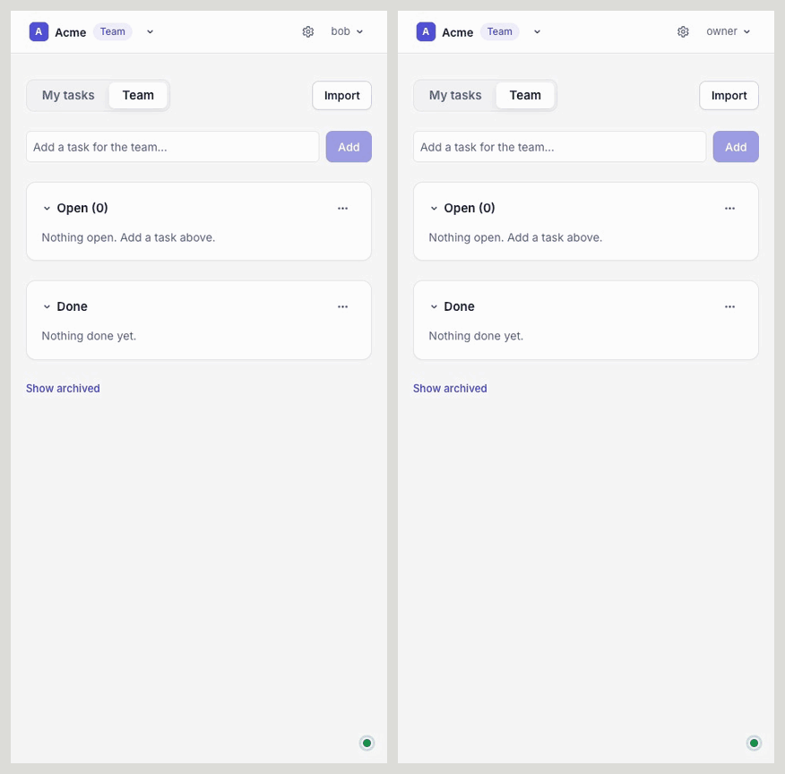

Free
$0
To try it on your own.
- 1 member
- Up to 10 open tasks
- No API key
Live in every open tab
Tadas is a to-do app for teams. Add a task, check one off, or move it to the top, and everyone on the team sees it the moment it happens. No refresh, no sync button. Everything the app does, the API does too.
Free for one person, for as long as you like.

What it does today
One list per team, one per person, and everything around it that a team actually uses.
Adds, edits, check-offs, and reorders reach every open tab of the team at once. A dropped connection catches up on its own, and nothing is lost.
Everyone gets a personal org for their own tasks. Start a team org when you need one, invite people, and switch between them in one click.
Give a task a due date and Tadas reminds the team that morning: on every open screen, and in Slack when a channel is connected.
Add Tadas to your Slack workspace and the team's changes are posted in the channel you pick. Type
/tadas for your open tasks, /tadas team for the team's, or
/tadas add to add one without leaving the conversation.
Attach a file to a task: the spec, the photo, the receipt. Each one shows a preview right on the task.
Import the list you have from a CSV file. Done tasks nobody touched for ninety days move to an archive, one click from coming back. Delete your account from Settings and it is gone.
Make an API key and script the list, or let an agent work it. The Python client and the
tadas command line use the same API, and tadas listen streams every change.
Tadas follows your system's light or dark theme, or the one you pick in the app.
Pricing
Start free. Move up when the list gets long or the team gets bigger.
$0
To try it on your own.
$5/ month
For one person who lives in it.
For small teams
$10/ month
One list for the whole team.
$3/ member / month
For bigger teams. $30 a month minimum.
Tadas is open source. The whole product, from the API to this page, is also a reference for how a system like it is built. Read it, run it, or borrow from it.
It takes a minute to sign up, and your personal list is ready when you are.
Get started free